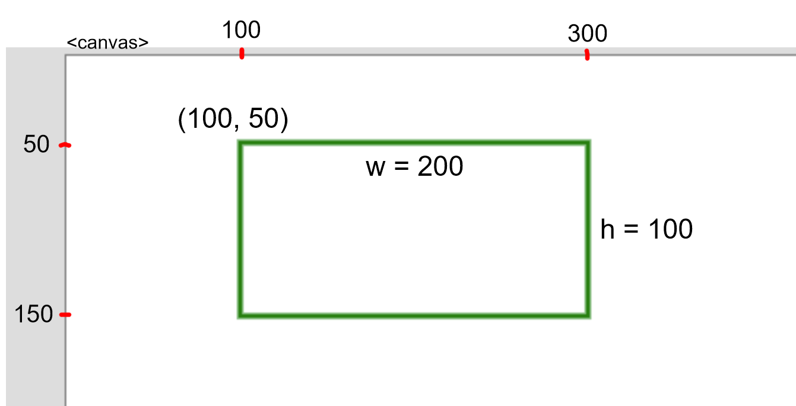
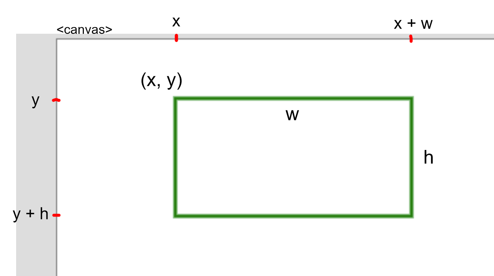

Use if statements to determine if a point is inside of a rectangle.
In this example, our test point will be the location of the mouse given by (mouseX,
mouseY).
Our test rectangle will have a top-left corner of (100, 50), a width of 200 and a height of 100.

The point will be in the rectangle if mouseX is between the left
and right edges of
the rectangle and if mouseY is between the top and
bottom edges of the rectangle.
if (mouseX > 100 && mouseX < 300 && mouseY > 50 && mouseY < 150) {
console.log("Mouse point is in rectangle.");
}
In this example, our test point will be the location of the mouse given by (mouseX,
mouseY).
Our test rectangle will have a top-left corner of (x, y), a width of w and a height of h.

The point will be in the rectangle if mouseX is between the left
and right edges of
the rectangle and if mouseY is between the top and
bottom edges of the rectangle.
if (mouseX > x && mouseX < (x + w) && mouseY > y && mouseY < (y + h)) {
console.log("Mouse point is in rectangle.");
}
A point is in a rectangle if both of the following are true: